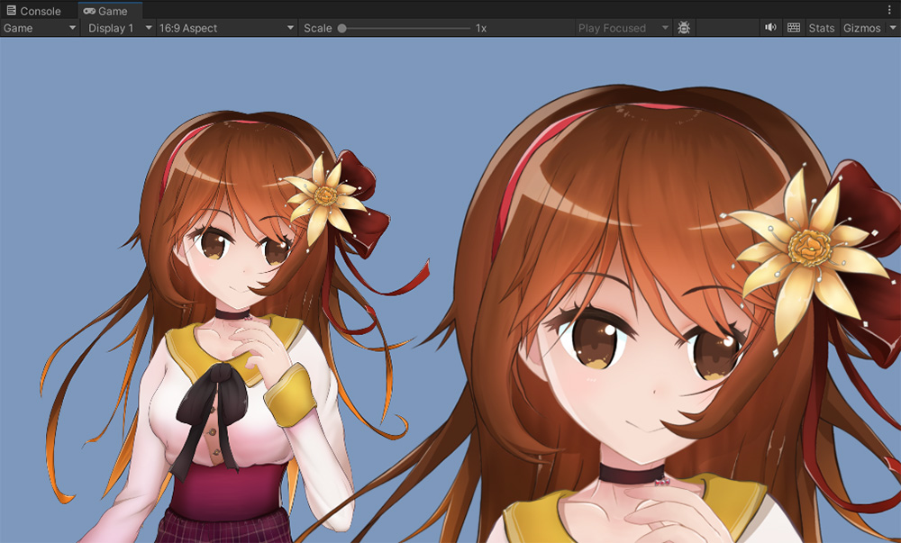
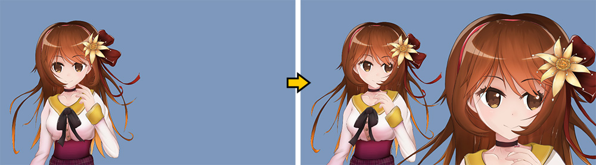
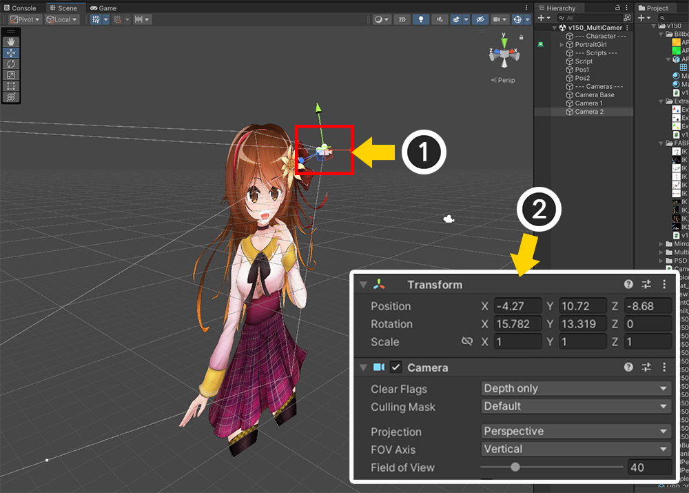
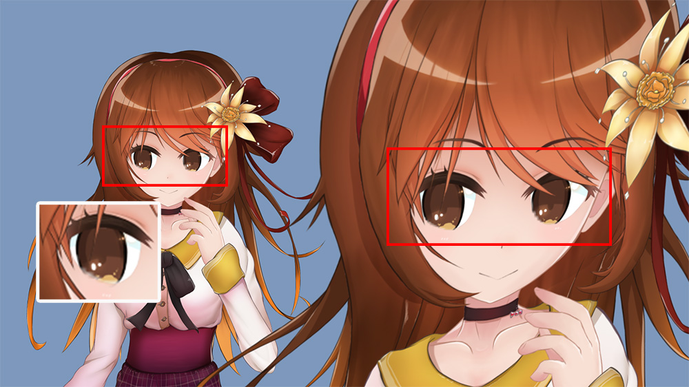

AnyPortrait > マニュアル > 複数のカメラによるレンダリング
複数のカメラによるレンダリング
1.5.0
ゲームシーンを構成してみると、技法によっては1つのオブジェクトを2つ以上のカメラでレンダリングすることがあります。
AnyPortraitで制作したキャラクターは「Mesh Renderer」で構成されているため、一般的には問題ありません。
ただし、「クリッピングマスク」はカメラと連動して動作するため、複数のカメラがあるシーンでは誤動作がしやすいです。
このページでは、カメラが2つ以上の場合とシーンのカメラ構成が変更されたときにそれぞれレンダリングエラーを解決する方法について説明します。
メモ
このページの説明は、カメラの「レンダリングテクスチャ」を利用する手法とも関連しています。
レンダリングテクスチャをターゲットにレンダリングするカメラの説明は、関連ページで確認できます。
複数のカメラをお持ちの場合

(1) Unity シーンに1つのキャラクターと (2) 3つのカメラがあります。
(3) このうち、2つのカメラがキャラクターをレンダリングしているので、「Game View」ではキャラクターが2回レンダリングされます。

ゲームを実行すると、キャラクターの目が正しくレンダリングされないことがわかります。
キャラクターの目はクリッピングマスクを利用してレンダリングされます。
AnyPortraitは、メッシュをクリッピングしてレンダリングするために、「レンダーテクスチャ（Render Texture）」と「コマンドバッファ（Command Buffer）」を利用します。
「コマンドバッファ」は、カメラに入力される一種のレンダリング要求である。
つまり、クリッピングマスク技術のために、キャラクターは自分をレンダリングするカメラを見つけてレンダリング要求をする必要があります。
一般にオブジェクトを1つのカメラがレンダリングするため、AnyPortraitのキャラクターも1つのカメラだけを探すのが基本です。
2台以上のカメラでレンダリングしたい場合は、それに関連するオプションを変更する必要があります。

(1) AnyPortraitエディタを開き、「Bake」ボタンを押します。
(2) 「Setting」タブを選択します。
(3) 「VR / Multi-Camera」オプションの値を「Multiple Cameras」に変更します。
「VR / Multi-Camera」は、レンダリング処理時に検出するカメラの最大数のオプションです。
オプションの値は次のとおりです。
- None : 1つのカメラだけがキャラクターをレンダリングすると見なして更新します。
- Single Camera and Eye Textures (Unity VR) : UnityのVRは1つのカメラで2回レンダリングを行う処理をするので、別途の処理が必要です。 VRについては、関連ページを参照してください。
- Multiple Cameras : 2台以上のカメラがキャラクターをレンダリングする場合は、この値を設定する必要があります。コマンドバッファを生成するために、すべてのカメラを対象に検証します。

「Bake」を実行してUnityシーンに戻ってゲームを実行すると、上記のようにすべてのカメラでクリッピングマスクが正常に動作することがわかります。
カメラを追加、削除する場合

クリッピングマスクのレンダリングの問題は、シーンに配置されたカメラが追加または削除されたときにも発生します。
マルチカメラでレンダリングの問題が解決されたとしても、カメラが削除、追加される過程で再レンダリングの問題が発生します。
AnyPortraitがクリッピングマスクをレンダリングするには、カメラを見つけてコマンドバッファを入力する必要があります。
新しいカメラがゲーム中に追加された場合、そのカメラをキャラクターが認識してコマンドバッファを追加入力する必要があります。
つまり、「新しいカメラが追加されたという事実」をキャラクターが認知させてコマンドバッファが再生成されると、問題は解決されるはずです。
このアプローチを実行するには2つの方法があります。
最初の方法は「スクリプトを使用してカメラの変更を直接知らせること」、2番目の方法は「キャラクターが常にすべてのカメラを検出しているように設定すること」です。
以下の説明をご覧になり、楽な方法を使って問題を解決すればよいでしょう。
方法 1. スクリプトを作成
カメラの数や情報が変更されると、「apPortrait」の「SetRenderingCameras」関数を呼び出してレンダリングの問題を解決できます。
「SetRenderingCameras」関数は、「キャラクターをレンダリングするカメラ」を「apPortrait」に伝える役割を果たします。
関数の引数でキャラクターをレンダリングするカメラだけをまとめて入力する必要があります。
ただし、この機能には検証テストが含まれているため、シーン内のすべてのカメラ（「Camera.allCameras」）を入力できます。
以下は、その関数を呼び出すスクリプトの例です。
（カメラの追加、削除を行うコードは省略しました。）
using UnityEngine;
using AnyPortrait;
public class CameraChangeScript : MonoBehaviour
{
// ターゲットであるapPortrait
public apPortrait portrait;
void Update()
{
// Aキーを押すとカメラがシーンに追加されます。
if ( Input.GetKeyDown( KeyCode.A ) )
{
// カメラを追加します。
AddCamera();
// カメラが変更されたことをキャラクターに通知します。
portrait.SetRenderingCameras(Camera.allCameras);
}
// Sキーを押すとカメラが削除されます。
if ( Input.GetKeyDown( KeyCode.S ) )
{
// 追加されたカメラを削除します。
RemoveCamera();
// カメラが変更されたことをキャラクターに通知します。
portrait.SetRenderingCameras(Camera.allCameras);
}
}
(省略)
}
方法 2. すべてのカメラを常に検出

(1) AnyPortraitエディタを開き、「Bake」ボタンを押します。
(2) 「Setting」タブを選択します。
(3) 「Check Cameras」オプションを「All Scene Cameras」に変更し、「Bake」を実行します。
AnyPortraitシステムは、ゲーム中にカメラが変更されると自動的にカメラを再スキャンし、クリッピングマスクをレンダリングする準備をします。
ここで重要なのは、「カメラが変化すること」を検出する方法です。
「Check Cameras」オプションは、シーン内のカメラの変化を検出する方法を決定します。
- Current Camera Mainly : 現在のカメラが無効になっている場合にのみカメラを再スキャンします。
- All Scene Cameras : シーンにあるすべてのカメラを各フレームごとに確認します。カメラの変更が頻繁な場合に便利です。

上記のいずれかの方法を適用すると、カメラの追加と削除のレンダリングエラーが解決されることがわかります。
クリッピングマスク最適化機能
AnyPortraitはクリッピングマスクを処理するために「レンダリングテクスチャ」を使用します。
一般に、高品質のマスク処理には大きな解像度のレンダリングテクスチャが必要です。
ただし、AnyPortraitには、低解像度でもマスクの品質を向上させる最適化機能があります。
低解像度のレンダリングテクスチャで高品質のレンダリングを可能にする「クリッピングマスク解像度の最適化」機能は、以下の条件がすべて満たされたときに実行されます。
1. キャラクターをレンダリングするすべてのカメラがOrthographicタイプでなければなりません。
2. キャラクターをレンダリングするすべてのカメラは、キャラクターを正面から見ている必要があります。
上記の条件を満たさない場合、最適化機能は動作せず、レンダリングテクスチャの解像度によってクリッピングマスクの品質が決まります。
最適化機能は最大限に動作するように実装されていますが、複数のカメラがあるシーンでは最適化の条件が満たされない場合があります。
この問題を経験している場合は、次の方法で問題を解決してください。

(1) 複数のカメラのいずれかを選択します。
(2) カメラを回転させ、「Perspective」タイプに変更してみました。

クリッピングマスク解像度の最適化が機能しなくなり、キャラクターの目の部分が低品質でレンダリングされることがわかります。

クリッピングマスクのレンダリングテクスチャ解像度を高めることで、レンダリング品質を向上させることができます。
(1) 「メッシュグループ」を選択します。
(2) 「Setting」タブを選択します。
(3) 「クリッピングマスクメッシュ」を選択します。
(4) 「Mask Texture Size」プロパティを変更します。この値はクリッピングレンダリングのレンダリングテクスチャの解像度なので、値が大きいほどレンダリング品質が向上します。

「Bake」をしてゲームを実行すると、クリッピングマスクの品質が良くなったことがわかります。